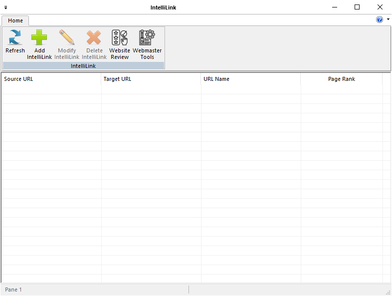

IntelliLink is a free (as in “free speech” and also as in “free beer”) online link manager. Running in the Microsoft Windows environment, its use is governed by GNU General Public License v3.0. IntelliLink is written in C++ and uses pure Win32 API and STL which ensures a higher execution speed and smaller program size. By optimizing as many routines as possible without losing user friendliness, IntelliLink is trying to reduce the world carbon dioxide emissions. When using less CPU power, the PC can throttle down and reduce power consumption, resulting in a greener environment. I hope you enjoy IntelliLink as much as I enjoy coding it!
The installer will likely require Administrative privileges in order to install IntelliLink (and later, to update IntelliLink or install or update plugins, or anything else that requires writing to the installation directory). If you do not have Administrative privileges, you either need to tell the installer to use a location where you do have write permission (though that may still ask for Administrator privileges), or you may choose not use the installer and instead run a portable edition from a directory where you have write permission.
These instructions will allow you to run a portable or mini-portable (also called “minimalist”), without requiring administrative privileges.
The portable zip edition of IntelliLink can be removed by deleting the directory they came in. If you manually set up file associations or context-menu entries in the OS, it is your responsibility to remove them yourself.
The IntelliLink menu features the application's most important functions:
This roadmap outlines where IntelliLink is heading. It brings together the work under way for the next release, the improvements that follow from how IntelliLink works today, and the maintenance work that goes into every release. Items are grouped by horizon rather than by date, and their order may change as feedback arrives or as the libraries IntelliLink builds on evolve, so please treat it as a statement of intent, not a promise. For everything that has already shipped, see the Release Notes.
Last reviewed: November 2026 (version 1.28 in development).
href attribute in double quotes that equals the target URL, followed by the exact anchor text on the same line. Reading the page as real HTML would also cover single-quoted attributes, anchors that span several lines or contain other markup, and HTML entities such as &.Clearer status and change notifications need the same groundwork as the faster Refresh (a background check that returns a detailed result), which is why the faster Refresh comes first.
ConfigLink.xml, but the Add and Modify dialogs have no field for it and new links start at 0. It could become editable, or be replaced by something that can be measured, such as the response time of the source page.ConfigLink.xml by hand.ConfigLink.xml) in the user profile folder and the window layout in the registry. An option to keep both next to the executable would make it fully portable.rel attribute of a link (for example nofollow, sponsored or ugc) next to its status.Want to see something sooner, or have an idea that is not listed here? Open an issue or start a conversation in Discussions. Contributions are welcome as well: any item above can be picked up through a pull request, as described in the next section. Please note that a pull request for an enhancement is merged only after its issue has been approved by a project administrator and carries the Accepted label, so it is best to open an issue and discuss the idea before you start.
As noted in the Contributing Rules for IntelliLink, all Pull Requests need to be attached to a issue on GitHub. So the first step is to create an issue which requests that the functionality be improved (if it was already there) or added (if it was not yet there); in your issue, be sure to explain that you have the functionality definition ready, and will be submitting a Pull Request. The second step is to use the GitHub interface to create the Pull Request from your fork into the main repository. The final step is to wait for and respond to feedback from the developers as needed, until such time as your PR is accepted or rejected.